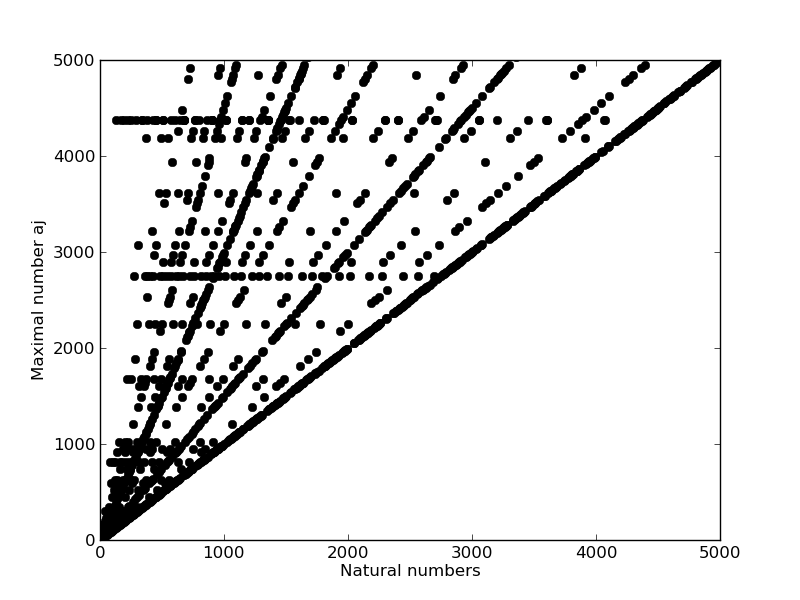

Please choose any project you like on the left.
{% elif task == 'collatzo' %} {% block kvapil_collatzo %} {% endblock %}
The first task shows some characteristics for Collatzo series. The Collatzo series $\{ a_i\}_{i=1}^k$ is defined for $n \in \mathbb{N}$ as:
\begin{align*}
a_1 &= n\\
a_i &=
\left\{\begin{array}{lr}
\frac{a_{i-1}}{2} & \text{ if } a_{i-1} \text{ is even}\\
3a_{i-1} + 1 & \text{ if } a_{i-1} \text{ is odd}\\
\end{array}
\right.
\end{align*}
The series converges when 1 occurs, because then the series will cycle through $1 \to 4 \to 2 \to 1 \to 4 \ldots$. It is not proven, that the Collatzo series will converge for arbitrary $n \in \mathbb{N}$, however it has been shown for large amount of numbers.
The first graph shows the number of steps for first 8000 natural number. By steps we mean the first index $k \in \mathbb{N}$ for which $a_k = 1$ in the series.

The second graph covers another characteristics for Collatzo series, that is the maximum number in the series before it converges. So for $\{ a_i\}_{i=1}^k, a_k = 1$ it is $a_j, 1 \le j \le k$, such $a_j \ge a_i, \forall i, 1 \le i \le k$.
Both graphs encourages that the hypothesis might be true because there are trends in how the series works.
import matplotlib.pyplot as plt
def collSteps(n):
steps = 0
maxN = n
while n!=1:
#print n
if n%2 == 0:
n /= 2
else:
n = 3*n + 1
steps += 1
maxN = max(maxN, n)
return steps, maxN
def plot_collatzo(x=8000, y=300, maxNumber=False):
points=[]
plt.axis([0,x,0,y])
for i in range(1,y):
points.append([i, collSteps(i)])
if maxNumber:
plt.plot( [i],[collSteps(i)[1]], 'ko' ) # collSteps(i)[0] are steps, collSteps(i)[1] are max num in collatzo series
plt.ylabel('Number of steps')
plt.savefig('collatzo_max.png')
else:
plt.plot( [i],[collSteps(i)[0]], 'ko' )
plt.ylabel('Number of steps')
plt.savefig('collatzo_steps.png')
return
if __name__ == '__main__':
plot_collatzo()
Click here to see the code.
{% elif task == 'graphics' %}
 {% elif task == 'turtle' %}
{% elif task == 'turtle' %}


Click here to see the code.
{% elif task == 'shapes' %}


 {% elif task == 'polygon' %}
{% elif task == 'polygon' %}
 {% elif task == 'hide_and_seek' %}
{% elif task == 'hide_and_seek' %}


 {% elif task == 'intersection' %}
{% elif task == 'intersection' %}
 {% elif task == 'triangulation' %}
{% elif task == 'chaos_game' %}
{% elif task == 'triangulation' %}
{% elif task == 'chaos_game' %}
 {% endif %}
{% endblock %}
{% block side_container %}
{% endblock%}
{% endif %}
{% endblock %}
{% block side_container %}
{% endblock%}